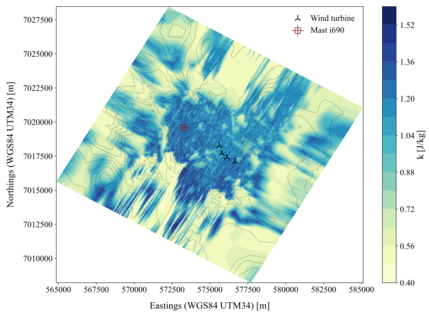
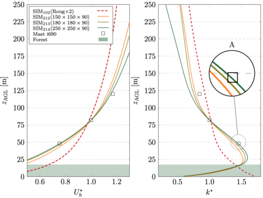

Professor Adjunto do Instituto Superior de Engenharia do Porto. Temas de tese de mestrado: Dinâmica de Fluidos Computacional com OpenFOAM, Energia Eólica e Escoamentos Atmosféricos.
Propostas de Tese de Mestrado em Aberto (MEM)
Predicting Wind Farm Production using OpenFOAM CFD with stratification effects:
This project involves using computational fluid dynamics (CFD) to analyze the impact of atmospheric stratification on wind farm energy production.
The thesis will build on two previous thesis which have already been completed, concerning the inclusion of forest effects and the use of boundary conditions from mesoscale models.
The student will use OpenFOAM to simulate wind flow over a wind farm, considering different atmospheric stability conditions. The goal is to understand how stratification affects wind speed and direction, and consequently, the energy output of the wind farm. The student will also compare the results with real data from a wind farm to validate the model.
A peer-reviewed publication is expected from this work.
Assessment of Wind Resource for Airborn Wind Energy Systems (AWES):
This project seeks to estimate the national wind resource for Airborne Wind Energy Systems (AWES).
It will first be based on publicly-available data from ECMWF and/or NASA, whereby the student will extract and process wind data at the operating heights of common airborn wind energy systems (i.e. kites).
The student will also use OpenFOAM to simulate wind flow over a terrain, to assess the impact of the terrain on the wind resource at the operating heights of AWES.
The student will also compare the results with real data from a wind farm to validate the model, and integrate the results within the framework of the UPWIND project
A peer-reviewed publication is expected from this work.
Wake Effects of a single AWES and an AWES wind farm :
This project seeks to assess the wake effects of a single Airborne Wind Energy System (AWES) and an AWES wind farm.
The student will use OpenFOAM to simulate the wake effects of a single AWES and an AWES wind farm, and compare the results with published data. The student will work within the framework within the framework of the UPWIND project.
A peer-reviewed publication is expected from this work.
Outras informações
As teses propostas são teses curriculares, i.e. não decorrerão em empresa
As teses de mestrado deverão ser escritas em língua inglesa e formatadas em LaTeX
Os temas propostos exigem conhecimentos de programação e CFD.
Sugere-se que os alunos consultem as ofertas de cursos de programação de curta duração do DEI, para os quais poderão estar em condições de ser reembolsados a 100%
Os alunos deverão ter tido um desempenho adequado nas UCs de Fluidos e Calor da Licenciatura
Teses de Mestrado em curso
Estudo Experimental e OpenFOAM CFD do Escoamento e Transferência de Calor num capacete de ciclismo,
aluno ANDRÉ FILIPE RIBEIRO BARBOSA,
tese em ambiente empresarial
Análise CFD da Extração de Partículas numa cozinha industrial,
aluno ALISSON SANTOS SILVA,
tese em ambiente empresarial
Teses de Mestrado recentemente orientadas
Gomes Pinto, J. M. L.(2024). Analysis of wind conditions over a real wind farm in heavily forested terrain using the OpenFOAM CFD model.
link para repositório

Turbulent kinetic energy at 17.5m agl for 210º winds

TKE and wind speed profiles at the mast
Oliveira Monteiro, H. A. P. (2023). Estudo do Recurso Eólico usando Openfoam com Condições de Fronteira de Modelos de Mesoescala.
link para repositório